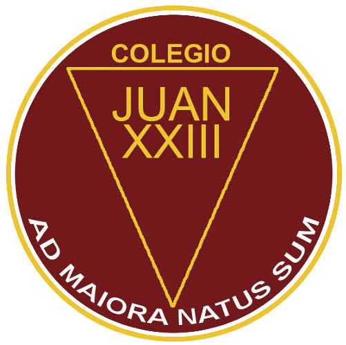
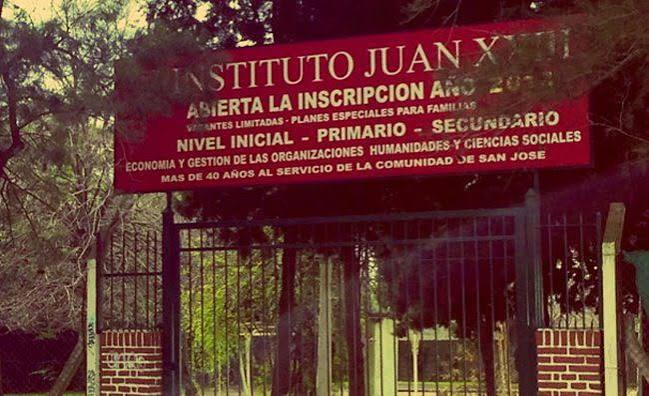

Colegio San Juan XXII


Competencias adquiridas
El secundario con orientación en Economía permite adquirir conocimientos sobre administración, contabilidad, economía y gestión de recursos. También se desarrollan habilidades para analizar información, resolver problemas, organizar tareas y comprender el funcionamiento de empresas y actividades comerciales. Además, brinda herramientas para desenvolverse en ámbitos administrativos y continuar estudios relacionados con economía y negocios.
-
Fecha de ingreso
01-01-2012
-
Fecha de salida
31-12-2020